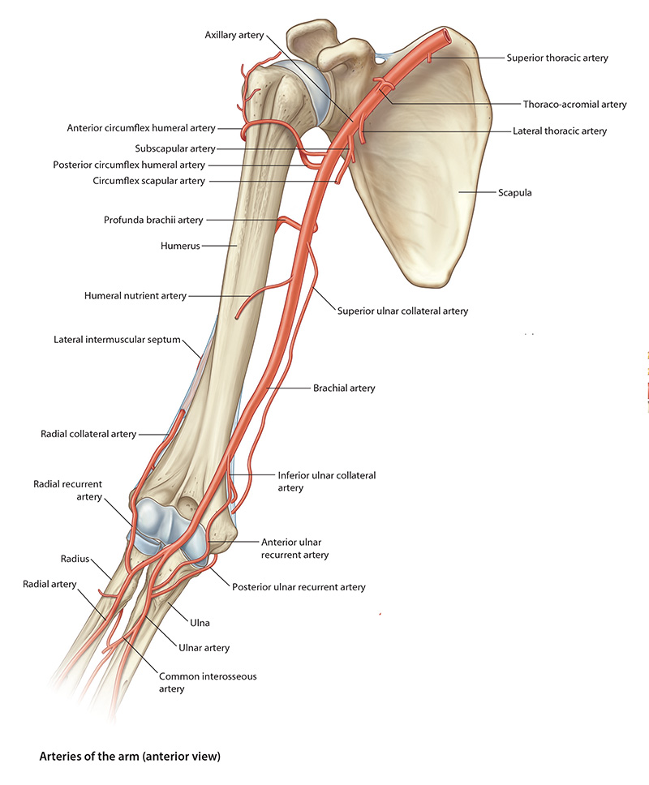

Lab3 - Module 1 - Anatomy of the Arm: Page 5 of 9
Arteries of the Arm
|  |
| Tap on image to enlarge |
| The named branches of the brachial artery are: profunda (deep) brachii artery, nutrient humeral artery, and the superior and inferior ulnar collateral arteries. |
| The Nutrient Humeral Artery arises at about the middle of the arm and enters the nutrient canal on the anteromedial surface of the humerus. We will not see this artery in the 3D cadaver. |
| The Superior Ulnar Collateral Artery – arises near the middle of the arm and accompanies the ulnar nerve posterior to the medial epicondyle of the humerus. It anastomoses with the posterior ulnar recurrent branch of the ulnar artery. We will not see this artery in the 3D cadaver. |
| The Inferior Ulnar Collateral Artery – arises from the brachial artery about 5 cm proximal to the elbow joint, passes inferomedially and anterior to the medial epicondyle. It anastomoses with the anterior ulnar recurrent branch of the ulnar artery. We will not see this artery in the 3D cadaver. |
| The arterial anastomoses of the elbow region provide a functionally and surgically important collateral circulation. The brachial artery may be clamped or ligated distal to the inferior ulnar collateral artery without producing tissue damage. |
| Brachial artery injury, for example during a fracture of the elbow, can cause necrosis of muscle due to ischemia. Necrotic muscle is replaced by fibrous scar tissue which causes the involved muscles to become permanently shortened. This produces a flexion deformity of the wirst and fingers called Volkmann’s ischemic contracture. |